秋田駒ヶ岳（あきたこまがたけ）の山頂部には、火山の中心が落ちくぼんでできた窪地カルデラが、北と南にふたつ並んでいます。同じ山のカルデラなのに、北はあとからの噴出物にほぼ埋められて、もう窪地には見えません。南は広い窪地のまま残り、底に若い火山たちが立っています。2026年9月20日、国見温泉からこの南カルデラを一日かけて歩きました。雨で始まり夕焼けで終わった一日を、地質図と写真と動画でたどります。
当日の様子の動画（1分39秒）。YouTubeで開く →
秋田駒に通った、足あとの地図
事前に作った地質図に、これまでの秋田駒山行のGPSトラックを重ねました。北の八合目から北部カルデラ側を歩いた2017年10月8日と2021年8月7日。南の国見温泉から横長根へ登った2017年10月14日と2018年10月18日。南カルデラの縁、金十郎尾根をめぐった2022年7月3日。通いながら、北と南の違いを足で確かめてきました。
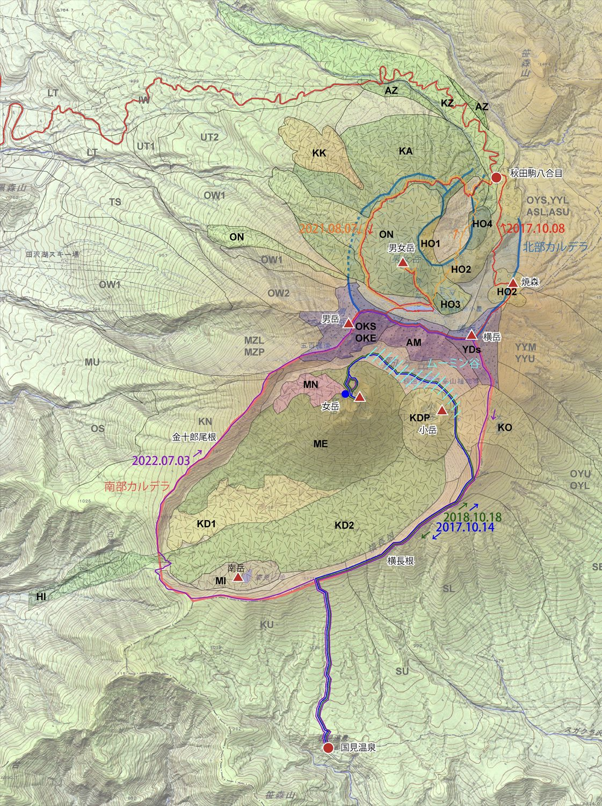
ふたつのカルデラ、できた順番
先に、カルデラの一般法則をひとつ。カルデラは、できた瞬間がいちばん深く、あとは埋まっていく地形です。カルデラができたあとも火山は活動を続けるので、新しい火砕丘や溶岩が窪地の中に積み重なっていきます。どれだけ埋まったかの差が、そのまま、いま見える景色の差になります。
地質図のもとになった研究（藤縄・林、2006）にそって並べると、秋田駒ヶ岳ではまず約1万3000年前、小岩井軽石を降らせ、生保内（おぼない）火砕流を流した大噴火で、南西側に差しわたし3km×2kmの大きな窪地ができました。南カルデラです。
北東側の窪地は、そのあとです。約1万年前ごろにU字形（馬蹄形）の火口が開き、続く噴火で男女岳（おなめだけ）などの火砕丘や溶岩がそれを埋め、約3000年の休止期をはさんで、また別の馬蹄形火口が開きました。できては埋まるをくり返したので、北側に大きな窪地は残っていません。いまの北側は、最高峰の男女岳と阿弥陀池がのる、ゆるやかな高まりです（気象庁は、南北のカルデラをほぼ同じ時期、約1万1000〜1万3000年前の形成とみています）。
いっぽう最近の約3000年間、活動の主な舞台は南カルデラの中でした。広い底には女岳・小岳・南岳の火砕丘が立ち、いちばん新しい噴火は1970年の女岳。つまり南カルデラは、いま埋められている途中の窪地です。カルデラの広い底と、そこに立つ若い火山たちをひとめで見られるのが、南カルデラ歩きの面白さです。
今回のルート
今回は国見温泉から、その南カルデラをめぐりました。地図の丸数字は、このあとの見出しの番号と対応しています。
この日のGPSトラックを、地形の上で3D再生した動画（56秒）。YouTubeで開く →
① 雨の国見温泉を出発
朝8時20分、雨の国見温泉を出発しました。駐車場に停まっているのは、自分たちの車だけ。朝の雨で、山をあきらめた人が多かったようです。木段を雨水が流れ落ちる道を一段ずつ登るうち、9時30分に雨が上がりました。
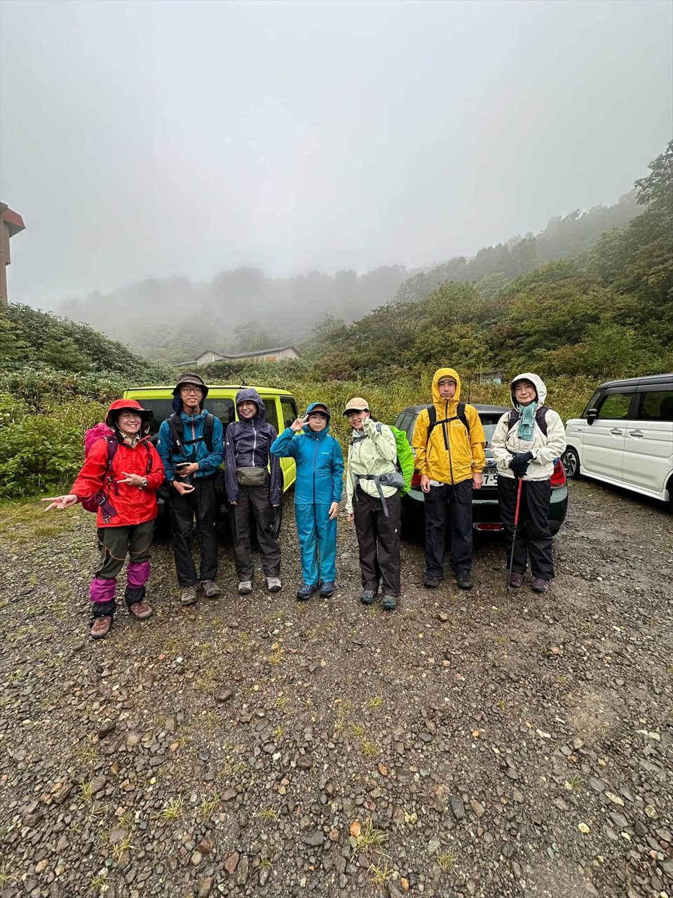

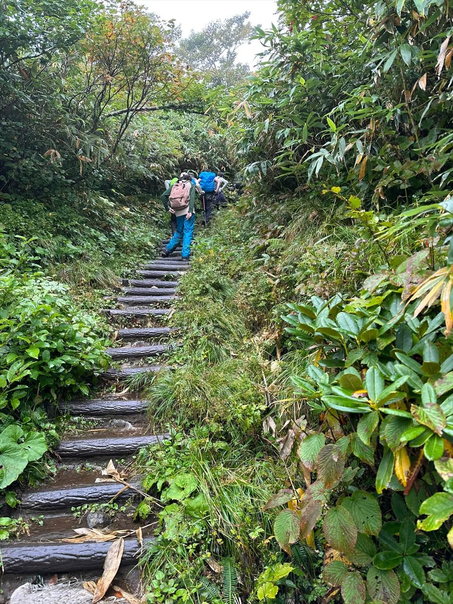
② 横長根：雲海の上へ
9時45分にカッパをザックにしまい、10時5分、南カルデラの南東の縁をつくる尾根、横長根に出ました。予定ではここを左へ曲がり、カルデラの縁を時計回りに金十郎尾根へ。五百羅漢から馬場の小径に入って女岳の周りを歩き、ムーミン谷を抜けて戻るつもりでした。それを急きょ右へ、反時計回りに進むことにしました。
横長根を進むうちに、雲がだんだん消えていきます。女岳の山の形、壮大な南カルデラの窪地、上空の雲を映す水たまりのような田沢湖の水鏡。現れるたびに、歓声が上がりました。雲海の向こうには鳥海山が、反対側には早池峰山と薬師岳が浮かんでいます。


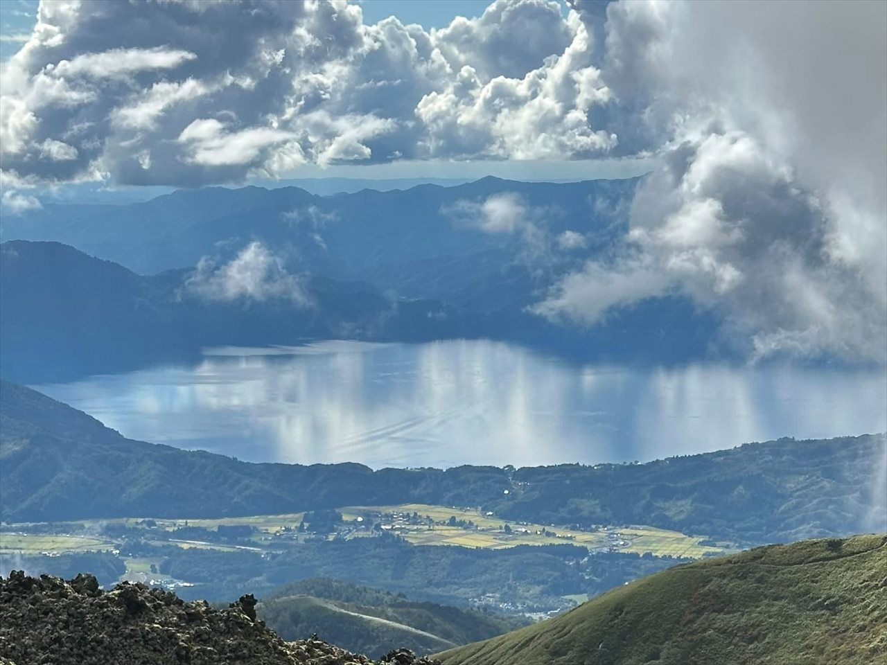

このあたり、標高1,200mは偽高山帯です。本来なら針葉樹の森があってよい高さなのに、背の低い木や笹原が広がっています。雪の多い東北の山らしい景色です。道ばたのオクトリカブトは、花にもぐって蜜を吸うマルハナバチと、持ちつ持たれつで暮らす花です。
③ 消えた山を思い描く
南カルデラの縁に立つと、考えたくなることがあります。この窪地ができる前、ここにはどんな山がそびえていたのか。
横長根や金十郎尾根といったカルデラの縁を山すそにして、標高2,500m級の山があったのではないか。そう考えて、この消えた山を「古国見岳」と呼んでいます。いまの秋田駒ヶ岳の最高峰、男女岳は1,637m。その1.5倍ほどの高さです。

④ 大焼砂：黒い斜面のコマクサ
横長根から北へ進むと、小岳の東に黒い砂れきの斜面が広がります。大焼砂（おおやけすな）です。約3,000年前に小岳から噴き出した、黒くて穴の多い軽い火山れきスコリアが積もった斜面で、雨水の刻んだ溝（ガリー）が走ります。
この黒い斜面に、コマクサが点々と咲いていました。まとまった群落をつくらず、ひと株ずつ離れて咲きます。
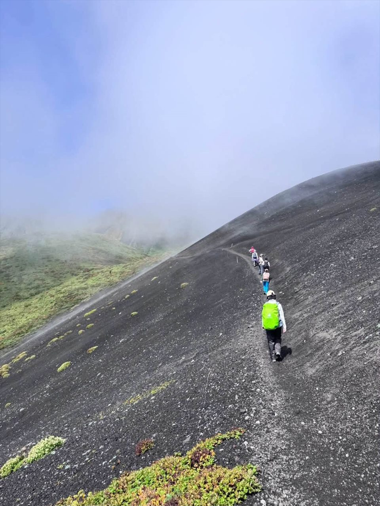


⑤ ムーミン谷と駒池
男岳、女岳、小岳に囲まれた谷が、ムーミン谷（馬場の小径）です。谷の壁は、笹原の緑と紅葉、スコリアの漆黒、晴れ上がった青空。鮮やかなコントラストでした。
谷の最低地には、駒池があります。水面には絶滅危惧Ⅱ類のホソバタマミクリが茂り、ヌシのように、変態途中のモリアオガエルがいました。木道のすき間では、ハヤチネフキバッタが卵を産んでいました。木道のすき間を産卵に使うことは、まだ知られていないかもしれません。


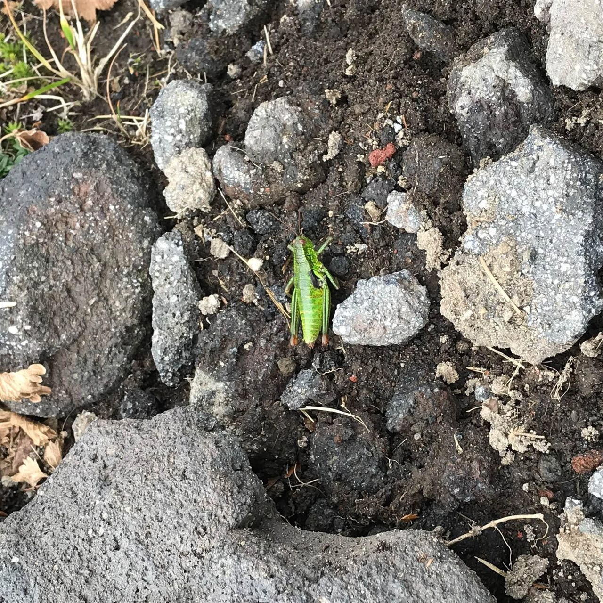
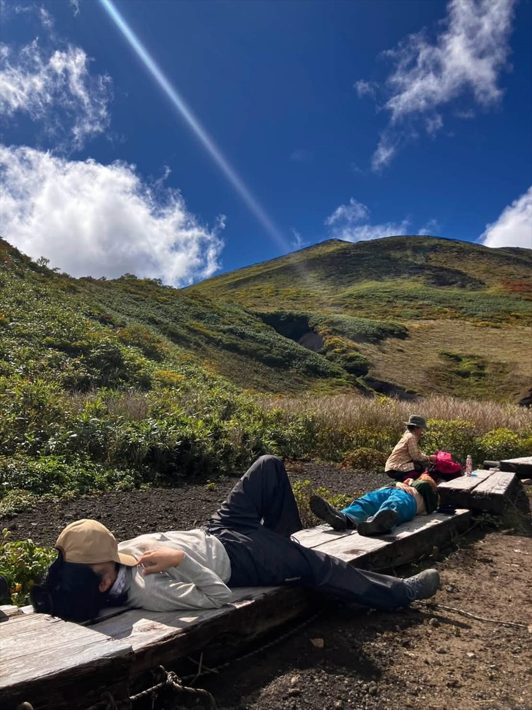

谷のまわりでは、山菜として知られるエゾニュウも、人の背丈ほどに伸びていました。
⑥ 女岳：1970年の噴火の、その後を歩く
ムーミン谷の南に立つ女岳（めだけ）は、秋田駒ヶ岳でいちばん新しい噴火の山です。1970年9月に始まった噴火は、溶岩のしぶきを断続的に噴き上げるストロンボリ式噴火で、翌年1月まで続きました。流れ出た溶岩の台地は、半世紀かけていちめんのコケに覆われ、アイスランドを思わせるフカフカの斜面になっています。

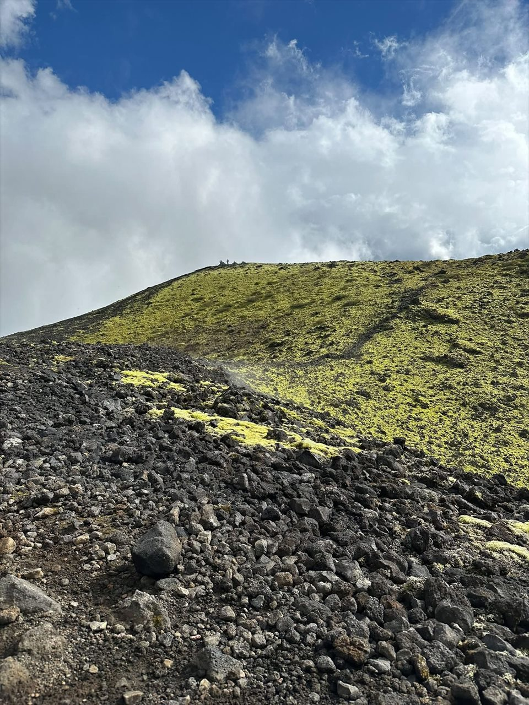
表紙になった噴火
噴火のさなかの女岳の写真は、地質調査所（いまの産総研地質調査総合センター）の雑誌「地質ニュース」1971年1月号の表紙を飾りました。夜空に金色の弧を描く、溶岩のしぶき。その場所に、半世紀あまりたって立ちます。表紙の火口はいま、コケに覆われた静かな窪みになっていました。
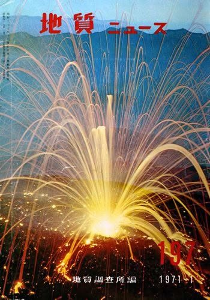
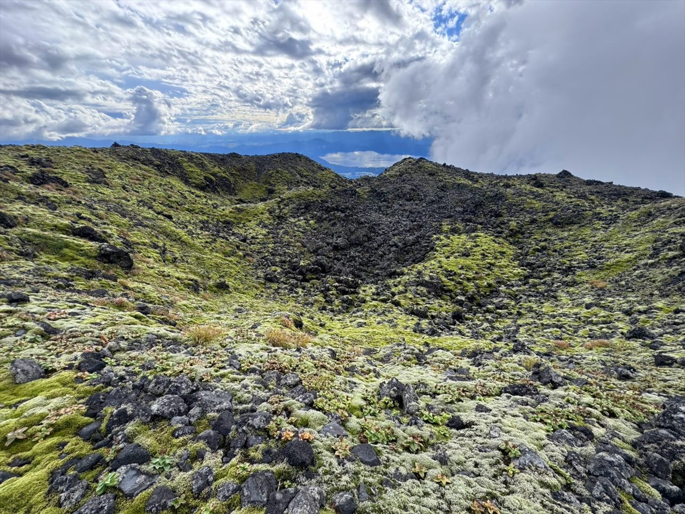
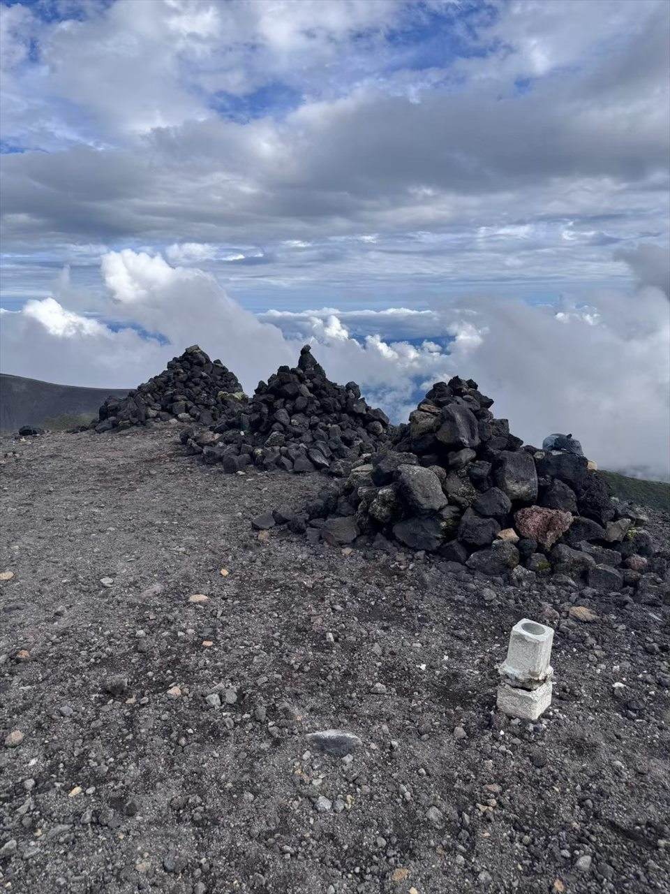
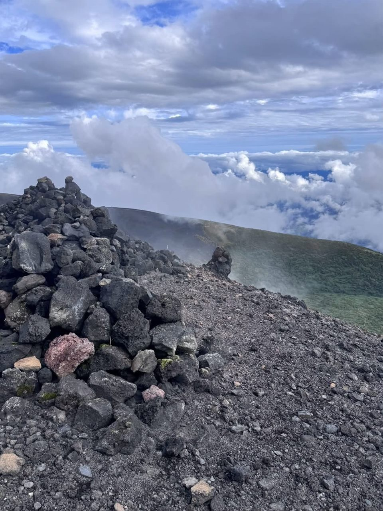
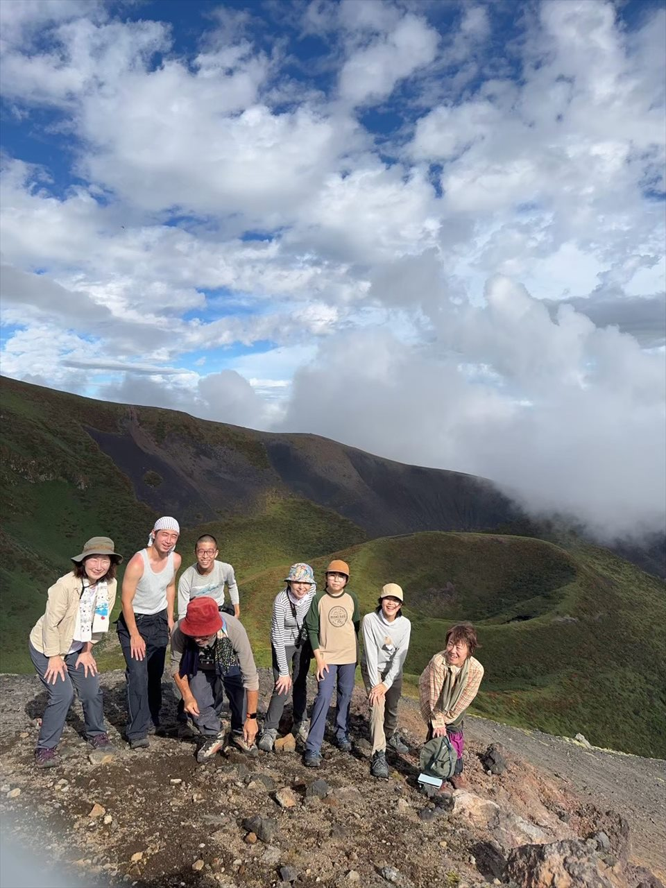
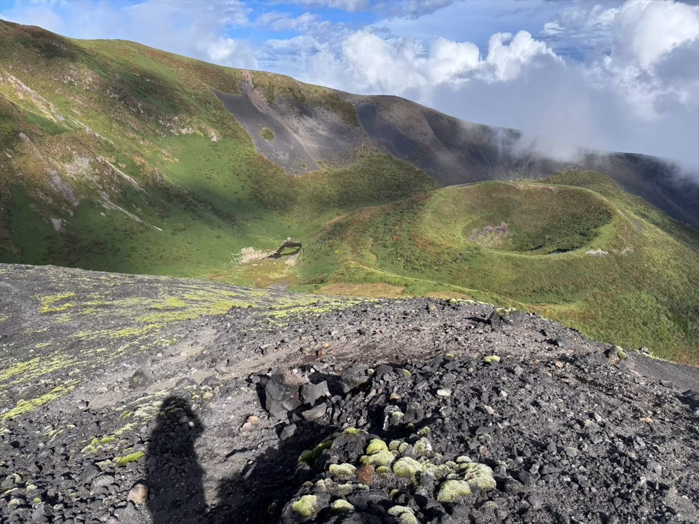
ケルンの足もとには、1970年の噴火で飛んだ噴石が転がっています。表面の白い付着物は、噴火とともに析出した硬石膏（こうせっこう）です。

いまも上がる、水蒸気
女岳の前山では、いまも噴気口から水蒸気が上がっています。山は終わったのではなく、ひと休みしているだけ。秋田駒ヶ岳は、気象庁が常時観測を続ける活火山です。
女岳前山の噴気の動画（27秒）。YouTubeで開く →
⑦ 夜の帳が下りる前に
帰りの横長根では、登山道が水路のように深く刻まれていました。国見温泉に戻ったのは17時30分、夜の帳（とばり）が下りる直前です。見上げると、夕焼けの空に波打つ雲が広がっていました。コラム「空に、波が立つ」で紹介した、ケルビン・ヘルムホルツ不安定性がつくる雲です。

みなさん足はボロボロでした。でもそれは、山行の困難さを示す疲れではありません。いろいろあった行程を満喫した証しの、やり切った疲れでした。
この日の見どころ（山行メモより）
- 雨の国見温泉出発
- 横長根の登路での薄日
- 横長根での青空と雲海
- 雲海に浮かぶ鳥海山
- 雲を映す田沢湖の水鏡
- 標高1,200mの偽高山帯
- 雲海に浮かぶ早池峰山と薬師岳
- 南カルデラを形成した標高2,500m級の古国見岳
- 吸蜜するマルハナバチと共生するオクトリカブト
- 大焼砂のスコリアの黒い斜面に点在する、まとまった群落をつくらないコマクサ
- ムーミン谷の壁の、笹原の緑、紅葉、スコリアの漆黒、晴れ上がった青空のコントラスト
- スコリア丘に刻まれるガリー
- 赤鉄鉱系の風化着色を受けた、古い横岳火山の安山岩系の火山岩（ピンク色）
- 木道のすき間に産卵するハヤチネフキバッタ（知られていない可能性あり）
- 駒池の絶滅危惧Ⅱ類ホソバタマミクリ
- 駒池に生息するモリアオガエル
- 人の背丈まで伸びたエゾニュウ（山菜）
- アイスランドを彷彿とさせる、溶岩とコケの台地
- 女岳前山の水蒸気の噴気口
- 女岳1970年のストロンボリ式噴火の噴出物に析出した硬石膏
- 横長根に刻まれる、水路化した踏み跡
- 「夜の帳が下りる」の意味
- 夕焼けとケルビン・ヘルムホルツ不安定性の雲
「机上登山」のネタになります
この記事をはじめ、須賀倉山や箱ヶ森など当サイトの山行記事は、来年1月に予定しているワークショップ「森のトリセツ：机上登山」の題材にもなる予定です。地図と写真と動画で、部屋にいながら山を歩き直す企画です。詳しくは、決まり次第トップページのお知らせでご案内します。